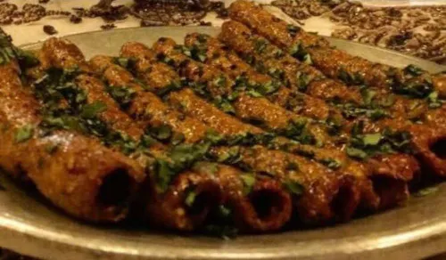

Kebab

Kebab - a traditional long cylindrical stick made of minced meat
Seekh kebabs are a traditional started in the kashmiri feast commonly called as Wazwan.
They are thin succulent cylindrical sticks made of minced meat slathered in a bowl of spices and grilled
to perfection.
The key ingredients for making this dish are:
- Minced Mutton.
- Ginger Garlic Paste.
- Onion Paste.
- Red Chilli Powder.
- Coriander Powder.
- Cumin Powder.
- Pepper.
- Dry Ginger Powder.
- Oil.
- Cashew Paste.
- Besan.
- Cream.
- Egg Yolk.
- Salt.
- Coriander leaves.
The steps to be followed to prepare this dish are:
- In a bowl mix together the mutton mince and the chicken mince. Mix them with your hands.
- Add ginger-garlic paste to it along with onion paste, red chilli powder, coriander powder,
cumin powder, powdered pepper, dried mango powder, saunth, oil, cashew paste and cream. Mix nicely.
- Add besan(chickpea flour) and egg yolk to bind. Mix well.
- Add salte to taste. Mix. Cover and keep in the fridge for 1 hour.
- Skewer the kebabs onto oiled skewers and grill or roast till the outside is nicely browned.
Baste frequently with oil while grilling.
- Once the kebabs are cooked, remove to a serving platter and garnish with onion rings,
fresh coriander leaves and lemon wedges.
The key ingredients and how to cook.
Go back to the main page.